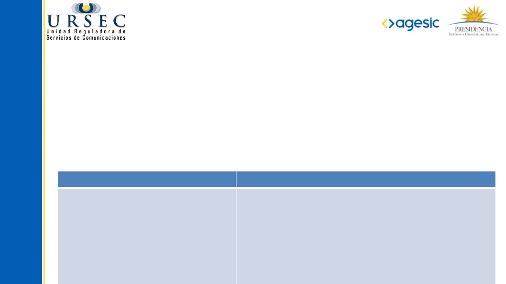
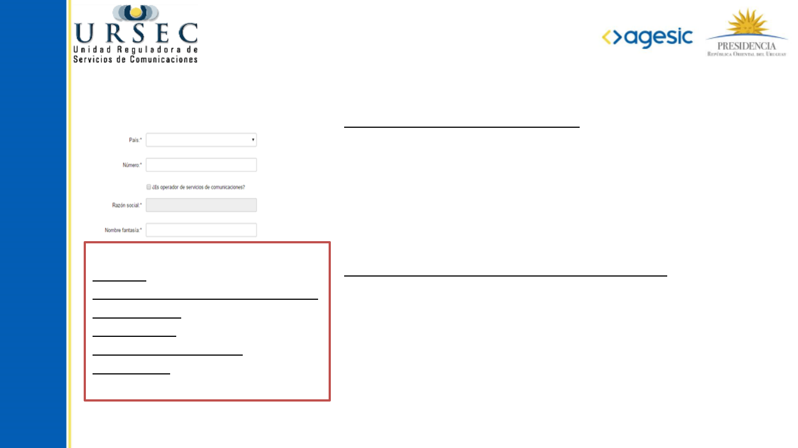
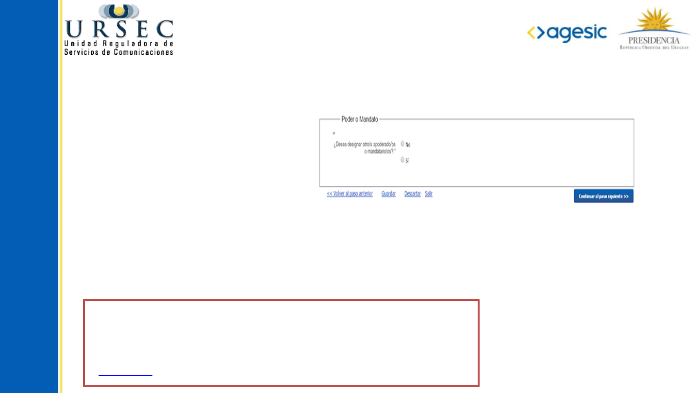
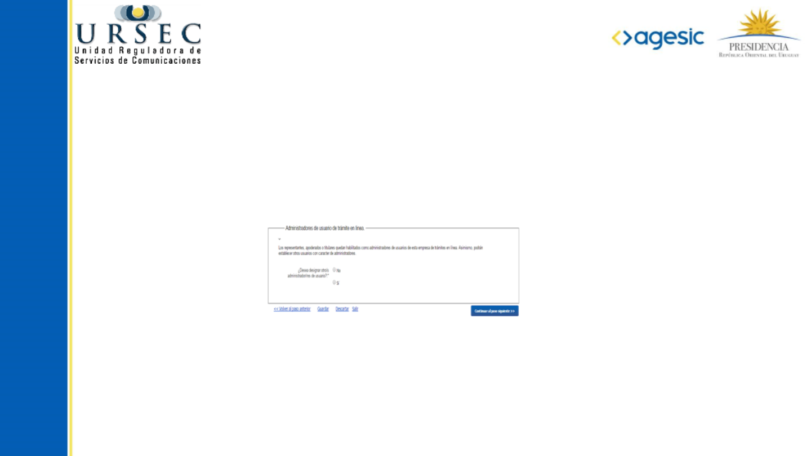
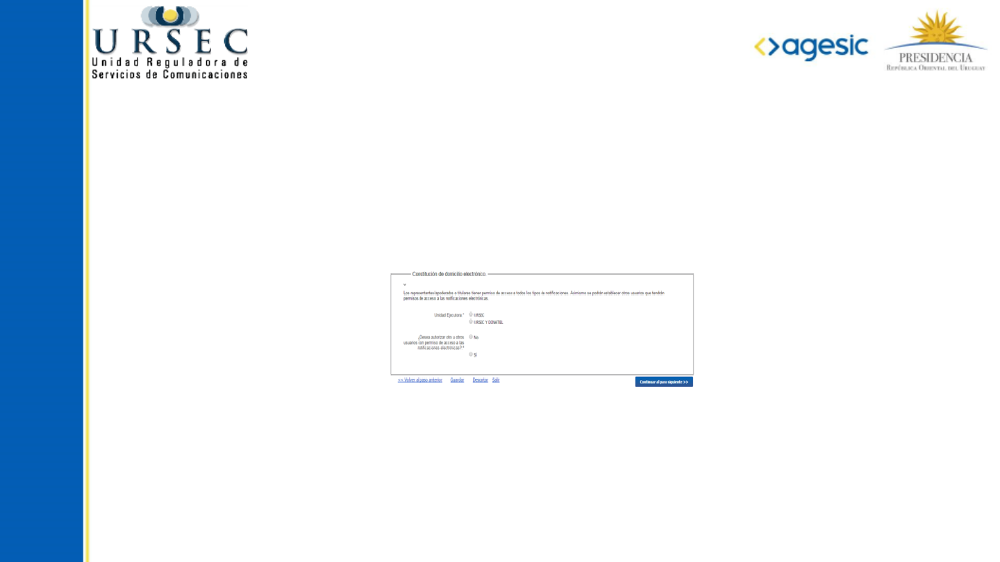
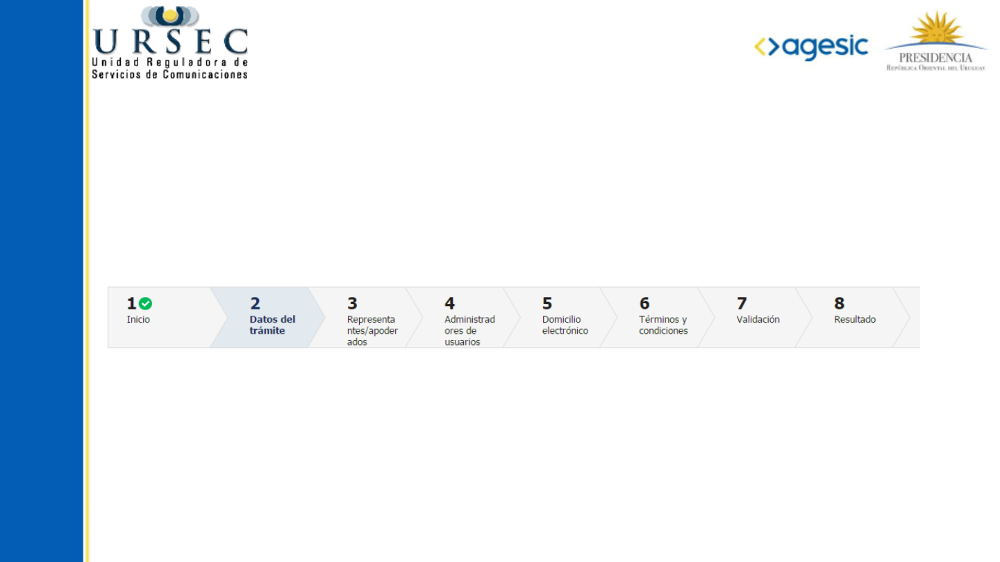
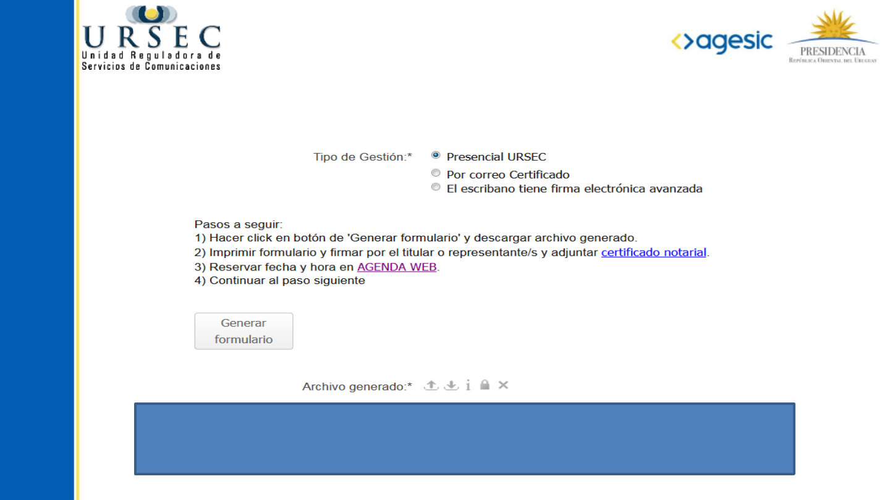
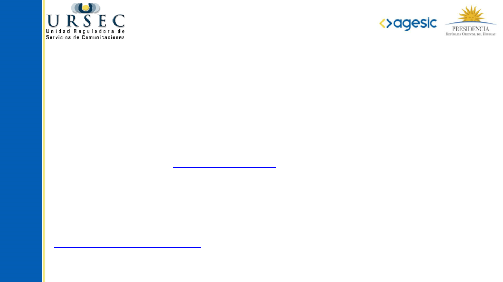

Instructivo para
EMPRESAS
UNIPERSONALES

❮
❯
El trámite especifica distintos roles de usuario, Usted necesita identificar los que
corresponden en su caso y tener en cuenta la información necesaria para poder completar los
datos de cada uno.
A continuación le proporcionaremos un listado de los datos solicitados.
Rol Datos necesarios
Empresa
Titular de la Unipersonal
Apoderado (en caso de ser
designado)
Administrador de usuario de trámites
Usuarios de notificaciones
electrónicas
Nro. de RUT u otro si es extranjero, nombre fantasía,
datos de ubicación
Login del usuario (Doc.identidad) -Tipo, Nro y
vencimiento-
Login del usuario (Doc.identidad), Poder –tipo y
vencimiento-
Login del usuario (Doc. Identidad)
Login del usuario (Doc.Identidad)
¿Qué información necesita antes de iniciar
el trámite?

❮
❯
Información de la Empresa
Si se selecciona el país Uruguay:
Se solicitarán los siguientes datos: Número (RUT) y nombre
fantasía.
El número de R.U.T. será validado y, en caso de encontrar una
empresa para dicho número, se cargará la razón social. No
podrá continuar al siguiente paso si el R.U.T. no es válido.
Si se selecciona un país distinto de Uruguay:
Se solicitarán estos datos: Tipo de documento (RUT u otro),
número, Razón Social y Nombre Fantasía. En caso de que el
tipo de documento sea “Otro”, deberá especificar.
Tipo de Operador: Se despliega los tipos de operadores, si no
se encuentra en ninguno se elige “no estoy incluido
directamente en ninguna de las actividades detalladas”
Ejemplos de Tipo de Operador:
Postales
Telecomunicaciones (fijas/móviles)
Radiodifusión
TV abonados
Radiotaxi-Radioalarma
Radioclubes
Información de los domicilios
Deberá ingresar los datos del domicilio real y domicilio
constituido en Montevideo a los solos efectos judiciales.
En este último caso el dato Departamento, queda restringido a
Montevideo.
Se pide:
Departamento, localidad, código postal, vialidad, nombre,
número, letra, solar, manzana, nombre del inmueble, bloque,
torre, piso, unidad, barrio, tipo de entidad colectiva, nombre
de entidad colectiva, descripción de la ubicación.
Si en el formulario domicilio real, se selecciona el departamento Montevideo, se desplegará a
continuación la siguiente opción: “¿El Domicilio Real es igual al Domicilio Constituido?”
Si se marca esta opción, los datos correspondientes al domicilio constituido en Montevideo, se
cargan automáticamente con los del domicilio real.

❮
❯
Información del Apoderado (si corresponde)
Si se selecciona la opción “Sí”, entonces se muestra el formulario “Datos de los apoderados/
mandatarios”.
Se pide:
● Login del usuario (documento de identidad)
● Poder: Tipo y vencimiento
A tener en cuenta:
Si tiene apoderados, se requiere CERTIFICADO NOTARIAL:
• Vigencia 30 días
• Modelo
En el caso de designar apoderados:

❮
❯
Información de los Administradores de
Trámites en línea
Si se selecciona la opción “Sí”, entonces se muestra el formulario “Datos de los
administradores de trámites en línea”.
Se pide:
• Login del usuario (documento de identidad)
El titular y el apoderado es “por defecto” administrador de trámites en línea, pero si
se desea designar otro/s administradores pueden agregarse.

❮
❯
Información de los Usuarios de
Notificaciones electrónicas
Si se selecciona la opción “Sí”, entonces se muestra el formulario “Datos de los
usuarios de Notificaciones electrónicas”.
Se pide:
• Login del usuario (documento de identidad)
Los titulares o apoderados cuentan con permiso de acceso a todos los tipos de
notificaciones, pero si se desea establecer otros usuarios pueden agregarse.

❮
❯
¿Cuáles son las Etapas del trámite?
Barra de Seguimiento:
En esta barra se ven los diferentes pasos por los que hay que transitar para cargar la
información necesaria para dar inicio al trámite.
Cada indicador de paso de la barra toma un color más oscuro en el momento que se está
ejecutando.
En este caso, se encuentra en el paso 2 del trámite.
El tilde blanco sobre fondo verde que aparece a la derecha del número de paso, indica que el
mismo ya se ha completado.

❮
❯
¿Cómo finaliza el trámite?
Nota: El certificado notarial se solicitará solo en el caso que tenga
apoderado.


❮
¿Dónde puedo realizar consultas?
En el organismo:
En forma telefónica a través de los números: 0800 1872 - +598 2902 8082 Int: 200 –
Fax +598 2902 8082 Int: 292.
En forma presencial en la Unidad Reguladora de Servicios de Comunicaciones: Av. Uruguay 988,
en el horario de atención: de lunes a viernes de 09:15 a 15:15 hs.
Vía web a través del mail: entrada@ursec.gub.uy
En los canales de Atención Ciudadana:
En forma telefónica a través del 0800 – INFO (4636) o *463.
Vía web a través del mail: atencionciudadana@agesic.gub.uy .
En forma presencial en los Puntos de Atención Ciudadana, ver direcciones en
www.atencionciudadana.gub.uy.